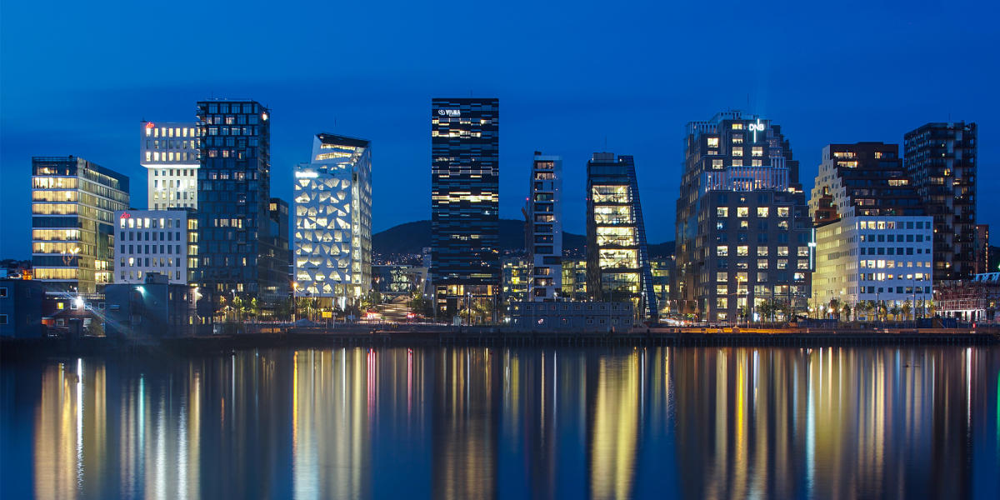

Oslo is the present capital of Norway and economic and governmental center of the entire country. It is a hub of Norwegian trade, banking, shipping and industry. It is a major maritime industrial region, home to many shipping companies and shipbrokers. It is considered a global city and ranks number one in terms of quality of life among European cities in a 2012 report by fDi magazine. The immigrant population in the city is growing somewhat faster than the Norwegian population, and in the city proper this is now more than 25% of the total.

The first traces of buildings in the area were found in 1000 AD, and the St. Clement's Church is built. In 1299, Oslo became the capital of Norway and the construction of the Akershus Fortress begins. Major fires ran throughout Oslo over 400 years and an entire quarter of the city was burned to ash in 1686. Throughout the 19th and 20th century, Oslo modernized rapidly and created railroad tracks, metros, powered rails, built the Oslo City Hall, Munch Museum, the Oslo Opera house, and expanded many industrial industries. In 1997, the population surpassed 500,000 people and in 2000 they celebrated their thousand-year jubilee.
www.touropia.com/best-places-to-visit-in-norway/